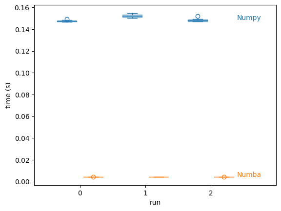

Some Fun with Numba#


This is a notebook to demonstrate numba following this article:
https://pythonspeed.com/articles/numba-faster-python/
The example is a simple function which takes an array and calculates the monotonically increasing version:
[1, 2, 1, 3, 3, 5, 4, 6] → [1, 2, 2, 3, 3, 5, 5, 6]
#!pip install numpy
#!pip install numba
import numpy as np
from numba import njit
Let’s create a function that does the work we need
# Defining a regular function
def monotonically_increasing(a):
max_val = 0
for i in range(len(a)):
if a[i] > max_val:
max_val = a[i]
a[i] = max_val
return a
# Defining the numba decorated function
@njit
def numba_monotonically_increasing(a):
max_val = 0
for i in range(len(a)):
if a[i] > max_val:
max_val = a[i]
a[i] = max_val
return a
Tip
you can use result = %timeit -o to record the execution time
# Let's check performance
# First run regular function:
time_numpy_1 = %timeit -o monotonically_increasing(np.random.randint(0, 1000000, 1000000))
148 ms ± 874 µs per loop (mean ± std. dev. of 7 runs, 10 loops each)
# Second run regular function:
time_numpy_2 = %timeit -o monotonically_increasing(np.random.randint(0, 1000000, 1000000))
152 ms ± 1.46 ms per loop (mean ± std. dev. of 7 runs, 10 loops each)
# Third run regular function:
time_numpy_3 = %timeit -o monotonically_increasing(np.random.randint(0, 1000000, 1000000))
149 ms ± 1.57 ms per loop (mean ± std. dev. of 7 runs, 10 loops each)
Duration of execution is the same.
# First run numba function:
time_numba_1 = %timeit -o numba_monotonically_increasing(np.random.randint(0, 1000000, 1000000))
4.34 ms ± 39.3 µs per loop (mean ± std. dev. of 7 runs, 1 loop each)
# Second run numba function:
time_numba_2 = %timeit -o numba_monotonically_increasing(np.random.randint(0, 1000000, 1000000))
4.33 ms ± 8.16 µs per loop (mean ± std. dev. of 7 runs, 100 loops each)
# Third run numba function:
time_numba_3 = %timeit -o numba_monotonically_increasing(np.random.randint(0, 1000000, 1000000))
4.34 ms ± 17.9 µs per loop (mean ± std. dev. of 7 runs, 100 loops each)
First run is much slower (function is compiled) but subsequent runs are ~14 times faster!
Woah! For a sample run the first took 162 ms, while the second took 4.5 seconds on average.
264/9.64
27.38589211618257
~27 times faster!!!
Note: the actual execution times will vary depending on the underlying system and the type of problem you are solving.
import matplotlib.pyplot as plt
# plot times from timeit outputs
data = [run.timings for run in (time_numpy_1, time_numpy_2, time_numpy_3)]
pos = np.arange(len(data))
c = 'C0'
plt.boxplot(data, positions=pos - 0.2,
patch_artist=True,
boxprops=dict(facecolor=c, color=c, alpha=0.5),
capprops=dict(color=c),
whiskerprops=dict(color=c),
flierprops=dict(color=c, markeredgecolor=c),
medianprops=dict(color=c))
plt.text(pos[-1] + 0.4, np.mean(data[-1]), f'Numpy',
color=c, weight='roman', ha='left')
data = [run.timings for run in (time_numba_1, time_numba_2, time_numba_3)]
pos = np.arange(len(data))
c = 'C1'
plt.boxplot(data, positions=pos + 0.2,
patch_artist=True,
boxprops=dict(facecolor=c, color=c, alpha=0.5),
capprops=dict(color=c),
whiskerprops=dict(color=c),
flierprops=dict(color=c, markeredgecolor=c),
medianprops=dict(color=c))
plt.text(pos[-1] + 0.4, np.mean(data[-1]), f'Numba',
color=c, weight='roman', ha='left')
plt.xlim(plt.xlim()[0], plt.xlim()[1] + 0.3)
plt.xticks(pos, pos)
plt.ylabel('time (s)')
plt.xlabel('run');
